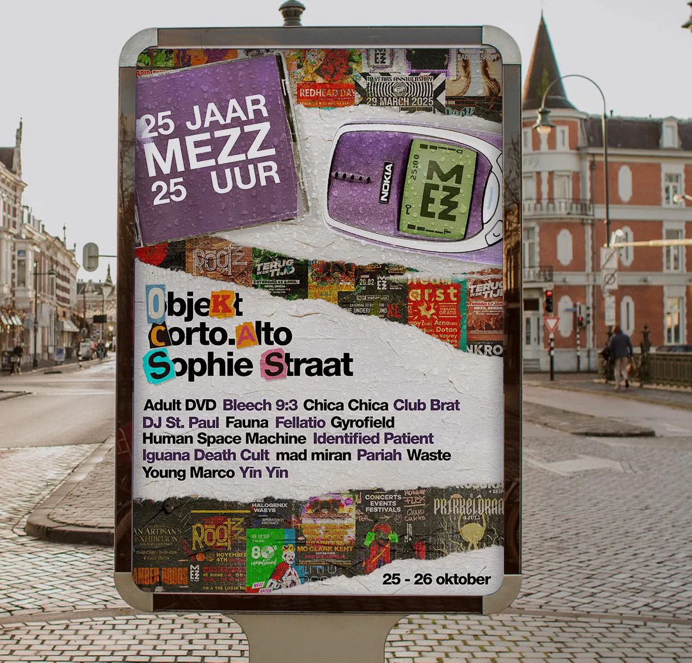
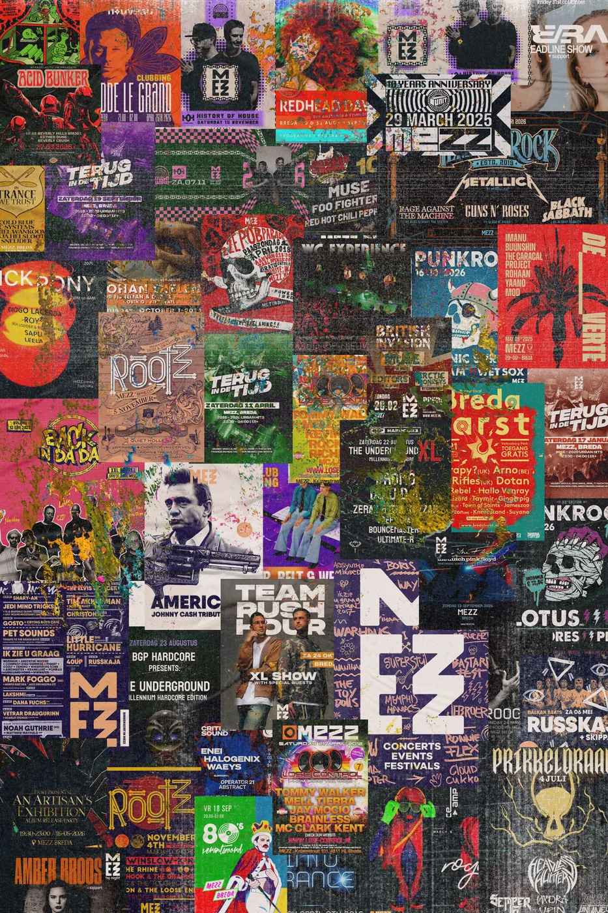
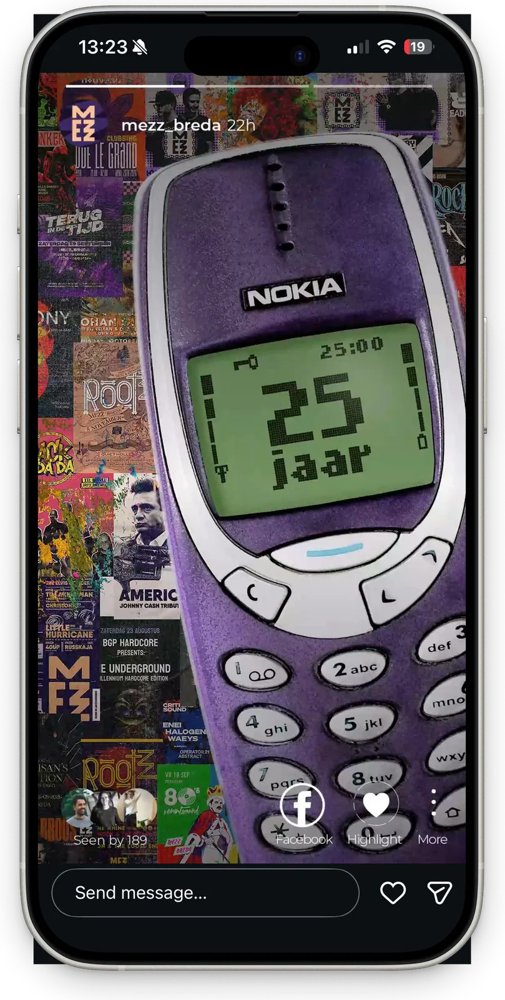

MEZZ
opdracht
Vaardigheden
- Graphic Design
- Motion Design
- Content Creation

Voor mijn opdracht bij MEZZ maakte ik een visuele uiting voor een conceptevenement: 25 jaar MEZZ. De opdracht was bewust breed gehouden, zodat ontwerpers hun eigen interpretatie konden laten zien.
MEZZ opende in oktober 2002 en programmeert verschillende genres voor een brede doelgroep. Het ontwerp moest dus voor een groot publiek werken. Ik koos voor een retro, analoge throwback-stijl die nostalgie oproept en een terugblik geeft op 25 jaar dansen in en rondom MEZZ.

Ontwerpkeuzes
- Het MEZZ-paars is een afscheid van de huisstijl vóór de rebranding.
- De Nokia 3310 is de eyecatcher. Hij is iconisch voor de tijdgeest en verbindt de onderdelen van de uiting.
- De line-up heeft een handgemaakt effect, bewust anti-AI, en laat de diversiteit aan genres zien.
- De achtergrond is een collage van MEZZ-posters door de jaren heen.



Conceptvideo's en socials
Ik trok deze stijl door in conceptvideo's voor de socials van MEZZ. Daarin staan de Nokia-ringtone en de nostalgie nog prominenter in beeld. Het scheuren van de poster wekt nieuwsgierigheid en laat het ruwe en stoute van MEZZ doorschijnen. Daarnaast heb ik stories en posts uitgewerkt en stage design als bonus verkend.